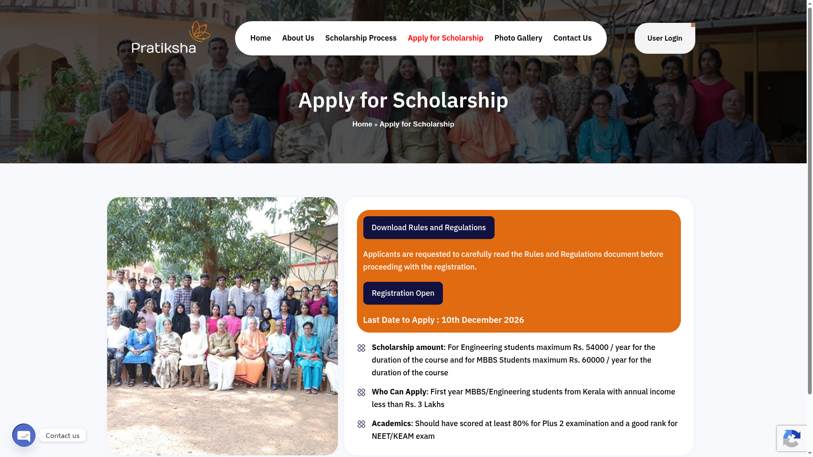
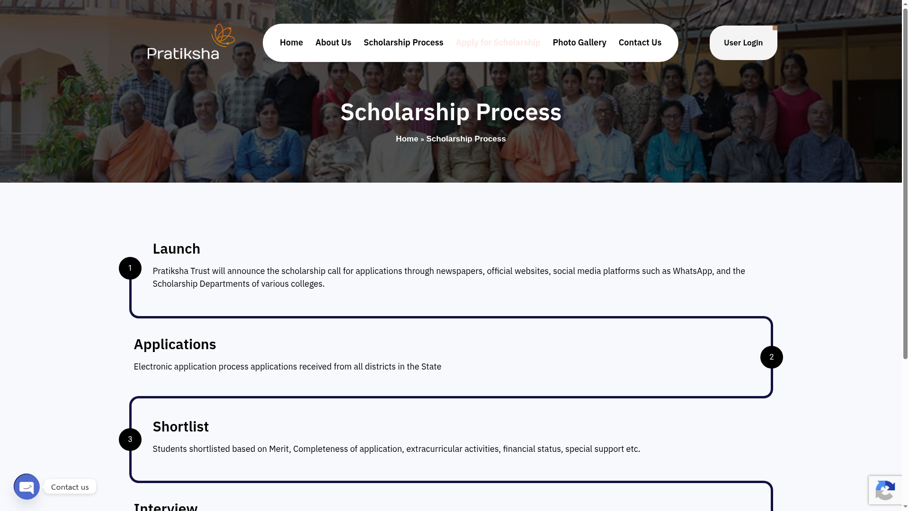
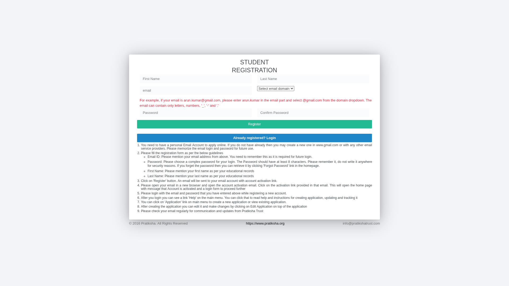
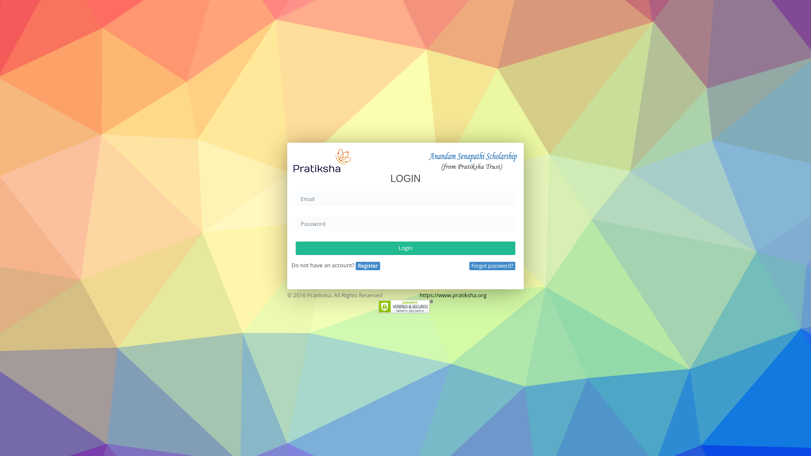

Pratiksha Trust Scholarship 2026-27: Kerala MBBS and Engineering guide
Starting MBBS or Engineering after Plus Two in Kerala? Pratiksha Trust's Anandam Senapathy Scholarship supports selected first-year students from families earning below Rs3 lakh a year. The sponsor's application page lists 10 December 2026 as the last date. No closing time is stated.
Who can apply?
- Students who passed Plus Two from Kerala and obtained admission to MBBS or Engineering in academic year 2026-27.
- Plus Two marks above 80%, as stated in the cycle-specific rules PDF. The short application webpage says "at least 80%"; applicants with exactly 80% should ask the Trust before relying on eligibility.
- A good KEAM / JEE / NEET entrance score. The rules do not give a numerical qualifying rank. For NEET, provide the All-India Rank.
- Annual family income below Rs3,00,000.
- Students already receiving another scholarship are not eligible, according to the rules.
The sponsor describes the programme as supporting MBBS and B.Tech students. Do not assume other health courses, diplomas or later-year students qualify.
How much support is offered?
- Engineering: maximum Rs54,000 per year for four years.
- MBBS: maximum Rs60,000 per year for 4.5 years.
These are maximum amounts, not a guaranteed award for every applicant. Shortlisting considers merit, financial need and application completeness. Shortlisted students attend an online personal interview. The process page also mentions verification, a house visit and validation of details.
Approved support is transferred to the student's bank account by NEFT. Renewal depends on satisfactory academic performance, yearly supporting-document updates and continued sponsorship. False information, discontinued study or poor academic performance can end support.
Documents to prepare
- Passport-size photograph.
- College admission receipt.
- Plus Two mark sheet.
- Entrance rank sheet, including NEET All-India Rank where applicable.
- Income certificate.
The public rules do not state file-size limits, permitted upload formats, certificate validity periods, a fixed number of awards or an exact minimum entrance rank. Check the live form and ask the Trust if any requirement is unclear.
How to apply, step by step
- Open the sponsor's application page. Read its deadline and use Download Rules and Regulations to read the 2026-27 rules.

Step 1: sponsor page with the rules link, registration link, deadline and eligibility summary. Official public page, captured 24 November 2026 at 1920 × 1080. Tap to enlarge.
- Review the sponsor's selection process. Applying is not the same as winning a scholarship.

Step 2: official process page describing applications, shortlisting and later selection stages. Official public page, captured 24 November 2026 at 1920 × 1080. Tap to enlarge.
- Follow Registration Open on the sponsor page to the linked registration portal. It asks for names, an email username and a domain selection, plus a password and confirmation. Use your own email and details matching your educational records. Use a unique password and a password manager.

Step 3: blank registration form and the portal's instructions for activation and creating an application. Official public page, captured 24 November 2026 at 1920 × 1080. Tap to enlarge.
- The public portal instructions say registration sends an activation link to your email. Activate your account, then use Login. We did not register or test email delivery.

Step 4: blank Pratiksha login screen. No student account or private details are shown. Official public page, captured 24 November 2026 at 1920 × 1080. Tap to enlarge.
- According to the registration page, signed-in users can open Help for instructions and Application to create or view an application. Prepare the required documents and follow the form's current prompts. These in-account steps are the portal's published instructions, not screens we accessed.
- Review every field and document before final submission. Follow any confirmation instructions shown and keep the acknowledgement if one is provided. Do not assume that creating an account completes your application. Monitor your email for messages from the Trust.
Is this a government scheme or a loan?
This is a private trust scholarship, not a government or bank scholarship. The sponsor says scholars are encouraged to support another student once financially stable, a "Pay It Forward" principle. The rules checked here describe scholarship conditions, not a loan, interest charge or repayment schedule. Read any declarations or agreements presented to you before accepting an award.
Fees, safety and limits
The public application page and linked rules do not state an application fee. That is not proof about every later screen. We did not reach a payment or final-submit screen. Use the sponsor-linked portal and verify any unexpected payment request directly with the Trust. Never share your password, bank details or identity documents in an AiCoN group.
The portal footer carries an older 2016 copyright, while the sponsor's linked rules explicitly name academic year 2026-27. Our current-cycle evidence is the sponsor page and that PDF, not the footer date.
English and Malayalam video walkthroughs
No reliable current-cycle English or Malayalam YouTube application walkthrough was verified in this check. We have not added an unrelated or old video as a substitute. Use the official written steps above.
മലയാളത്തിൽ പ്രധാന വിവരങ്ങൾ
കേരളത്തിൽ പ്ലസ് ടു പൂർത്തിയാക്കി 2026-27 വർഷം MBBS അല്ലെങ്കിൽ എൻജിനീയറിങ്ങിന് പ്രവേശനം നേടിയ ഒന്നാം വർഷ വിദ്യാർത്ഥികൾക്കുള്ള സ്വകാര്യ ട്രസ്റ്റ് സ്കോളർഷിപ്പാണ് ഇത്. കുടുംബ വാർഷിക വരുമാനം 3 ലക്ഷം രൂപയിൽ താഴെയായിരിക്കണം. ഔദ്യോഗിക 2026-27 ചട്ടങ്ങളിൽ പ്ലസ് ടുവിന് 80 ശതമാനത്തിന് മുകളിൽ മാർക്ക് വേണമെന്ന് പറയുന്നു. മറ്റൊരു സ്കോളർഷിപ്പ് ലഭിക്കുന്നവർക്ക് അപേക്ഷിക്കാനാവില്ല.
എൻജിനീയറിങ്ങിന് വർഷം പരമാവധി 54,000 രൂപയും MBBS-ന് പരമാവധി 60,000 രൂപയുമാണ്. എല്ലാവർക്കും ലഭിക്കുമെന്ന് ഉറപ്പില്ല. തിരഞ്ഞെടുപ്പും ഇന്റർവ്യൂവും ബാധകമാണ്. അവസാന തീയതി 2026 ഡിസംബർ 10.
ആദ്യം ഔദ്യോഗിക പേജിലെ ചട്ടങ്ങൾ വായിക്കുക. Registration Open വഴി സ്വന്തം ഇമെയിൽ ഉപയോഗിച്ച് രജിസ്റ്റർ ചെയ്യുക. ഇമെയിൽ ആക്റ്റിവേഷൻ പൂർത്തിയാക്കിയ ശേഷം ലോഗിൻ ചെയ്യുക. പോർട്ടൽ നിർദ്ദേശമനുസരിച്ച് Application തുറന്ന് രേഖകൾ നൽകി അപേക്ഷ പൂർത്തിയാക്കുക. ഞങ്ങൾ അക്കൗണ്ട് തുറക്കുകയോ ലോഗിൻ ചെയ്ത് അപേക്ഷ സമർപ്പിക്കുകയോ ചെയ്തിട്ടില്ല.
Official sources
- Sponsor application page: deadline, summary and designated registration link.
- 2026-27 rules PDF: detailed eligibility, maximum support, documents and renewal conditions. The PDF was read as extracted text; its browser viewer did not open in this check.
- Sponsor selection process.
- Sponsor background and Pay It Forward description.
- Sponsor-linked registration portal: public account activation and application instructions.